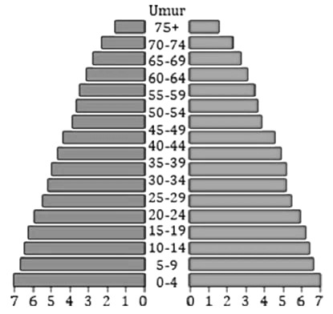
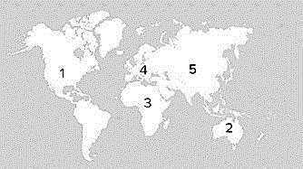
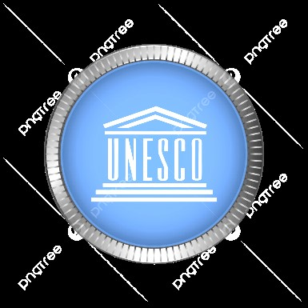
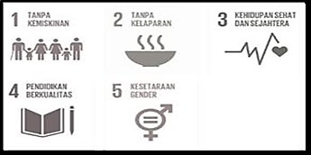

Soal 01 Secara geografis, Indonesia terletak diantara benua Asia dan Australia. Hal ini memiliki dampak positif terhadap perekonomian nasional. Berikut ini yang bukan termasuk dampak positif letak geografis tersebut adalah… A. Indonesia menjadi jalur silang lalu lintas perdagangan internasional. B. Indonesia menjadi jalur singgah kapal-kapal antar negara. C. Indonesia menjadi jalur singgah peredaran narkotika internasional. D. Indonesia menjadi jalur singgah maskapai penerbangan antar negara.
Soal 02 Manusia pada masa awal kehidupan sering berpindah-pindah tempat dan memanfaatkan alam sekitar secara langsung tanpa mengolahnya secara permanen. Kegiatan manusia pada masa tersebut dapat dijelaskan sebagai… A. hidup menetap dan bercocok tanam. B. hidup nomaden dengan berburu dan meramu. C. hidup menetap dengan sistem perdagangan. D. hidup berkelompok dengan teknologi logam.
Soal 03 Di sebuah daerah pesisir, hasil tangkapan ikan menurun drastis selama beberapa bulan terakhir. Hal ini terjadi karena penggunaan alat tangkap yang merusak ekosistem laut sehingga populasi ikan berkurang. Faktor utama yang menyebabkan kelangkaan pada pernyataan tersebut adalah… A. keterbatasan sumber daya alam. B. pertumbuhan penduduk yang cepat. C. distribusi yang tidak merata. D. kebutuhan manusia yang tidak terbatas.
Soal 04 Indonesia memiliki wilayah laut yang sangat luas dan kaya akan sumber daya alam seperti ikan, rumput laut, dan terumbu karang. Pemanfaatan sumber daya alam tersebut dapat memberikan dampak positif bagi masyarakat pesisir. Manfaat utama pemanfaatan sumber daya alam laut tersebut bagi masyarakat pesisir adalah… A. meningkatkan ketergantungan masyarakat pada impor hasil laut. B. memperluas lapangan kerja dan meningkatkan pendapatan nelayan. C. mengurangi aktivitas ekonomi masyarakat pesisir. D. menyebabkan masyarakat pesisir berpindah ke wilayah perkotaan.
Soal 05 Pak Rudi bekerja sebagai buruh harian lepas. Penghasilannya tidak tetap dan ia tinggal di rumah kontrakan sederhana. Namun, ia aktif sebagai pengurus RT dan sering menjadi penengah konflik warga. Berdasarkan pernyataan tersebut, analisis yang tepat mengenai status sosial Pak Rudi adalah… A. status sosial Pak Rudi tinggi karena memiliki peran penting di masyarakat. B. status ekonomi Pak Rudi tinggi karena memiliki pengaruh sosial. C. status sosial Pak Rudi sepenuhnya rendah karena pekerjaannya. D. status sosial Pak Rudi rendah secara ekonomi, tetapi memiliki status sosial tinggi di lingkungan.
Soal 06 Perhatikan pernyataan berikut! Seorang murid mengatakan: “Karena Indonesia berada di antara dua benua, Indonesia memiliki banyak gunung api.” Analisis yang tepat berdasarkan pernyataan diatas adalah… A. benar, karena benua menyebabkan gunung api. B. salah, karena gunung api dipengaruhi letak geologis, bukan letak geografis. C. benar, karena samudra membentuk gunung api. D. salah, karena garis bujur menyebabkan gunung api.
Soal 07 Perhatikan gambar berikut!  Ciri utama yang paling tepat dari Gambar piramida penduduk disamping adalah… A. angka kelahiran rendah dan penduduk menua. B. angka kelahiran tinggi dan jumlah anak besar. C. angka kematian sangat rendah dan penduduk stabil. D. migrasi masuk besar pada usia tua.
Soal 08 Perhatikan wacana sejarah berikut! "Pada abad ke-15 hingga 17, bangsa-bangsa Eropa seperti Portugis, Spanyol, Belanda, dan Inggris melakukan pelayaran jarak jauh melintasi samudra. Motivasi mereka sering dirangkum dalam konsep 3G: Gold, Glory, Gospel. Namun, dalam praktiknya, ketiga tujuan ini tidak selalu berjalan seimbang. Ada wilayah yang lebih mengalami eksploitasi ekonomi, ada pula yang mengalami dominasi politik, serta ada yang menjadi sasaran penyebaran agama secara intensif." Pernyataan yang paling tepat untuk menunjukkan wacana diatas hubungan Gold dan munculnya Kolonialisme adalah… A. bangsa Eropa melakukan pelayaran semata-mata untuk meneliti benua baru. B. penyebaran agama Kristen menjadi alasan utama penaklukan wilayah Asia. C. bangsa Eropa menolak perdagangan dan lebih memilih pertanian. D. rempah-rempah menjadi komoditas penting sehingga mendorong perebutan jalur dagang dan Pelabuhan.
Soal 09 Perhatikan tabel dampak Cultur Stelsel berikut! Pihak Dampak Belanda Keuntungan Besar Rakyat Kelaparan, Kerja Berat Kesimpulan paling tepat dari tabel tersebut adalah… A. tanam paksa tidak berpengaruh. B. tanam paksa menguntungkan semua pihak. C. tanam paksa menciptakan ketimpangan sosial-ekonomi. D. tanam paksa membuat rakyat kaya.
Soal 10 Pemicu Perang Diponegoro sering dikaitkan dengan pemasangan patok jalan di tanah Diponegoro. Makna historis paling tepat dari peristiwa ini adalah… A. rakyat menolak pembangunan jalan karena tidak suka modernisasi. B. belanda tidak memahami kondisi tanah Jawa. C. simbol campur tangan kolonial terhadap hak tanah, adat, dan wibawa bangsawan lokal. D. Diponegoro ingin membangun jalan sendiri
Soal 11 Perubahan sosial budaya dapat terjadi karena pengaruh dari luar masyarakat, seperti kontak dengan kebudayaan lain. Hal ini sering kali membawa transformasi dalam berbagai aspek kehidupan masyarakat tradisional, mulai dari cara pemenuhan kebutuhan, sistem pengetahuan, hingga pola interaksi sosial. Contoh perubahan yang dialami oleh masyarakat tradisional akibat pengaruh eksternal adalah… A. perubahan dari berburu-meramu ke bercocok tanam menetap, karena pengaruh kelompok tetangga yang sudah maju. B. perubahan upacara adat menjadi lebih meriah karena peningkatan hasil panen. C. pergantian kepemimpinan adat dari ayah ke anak sesuai hukum waris turun-temurun. D. perpindahan tempat tingah sementara (nomaden) karena musim kemarau yang merupakan siklus alam.
Soal 12 Di sebuah desa yang terisolasi, pembangunan jalan aspal and jaringan internet tinggi akhirnya terselesaikan. Akses yang sebelumnya sangat terbatas, kini menjadi lancar. Banyak pemuda desa mulai mempelajari keterampilan digital, mempromosikan produk kerajinan lokal secara online, and terhubung dengan pasar yang lebih luas. Selain itu, informasi mengenai teknik pertanian modern and kesehatan juga mudah diakses oleh warga. Dampak positif dari perubahan sosial yang terjadi adalah… A. meningkatnya arus urbanisasi ke kota besar karena transportasi lancar. B. melemahnya nilai-nilai kegotongroyongan tradisional di masyarakat desa. C. munculnya peluang ekonomi baru and peningkatan akses informasi bagi warga desa. D. terjadinya konflik status sosial antara kelompok yang melek teknologi and yang tidak.
Soal 13 Awalnya, kegiatan musyawarah desa, arisan, and undangan perayaan selalu dilakukan dengan tatap muka. Kini, hampir semua koordinasi dilakukan melalui grup online. Frekuensi kumpul-kumpul warga di balai desa pun berkurang. Namun, di sisi lain, para pemuda desa berhasil memasarkan produk kerajinan lokal hingga ke luar negeri berkat platform e-commerce and media sosial. Mereka juga aktif belajar keterampilan baru dari tutorial online. Pernyataan yang paling tepat menganalisis kompleksitas tersebut adalah… A. teknologi hanya membawa dampak positif dengan memperluas pemasaran produk desa. B. teknologi secara pasti mengurangi solidaritas sosial karena mengurangi interaksi tatap muka. C. teknologi menciptakan perubahan paradigma interaksi, dari berbasis kedekatan fisik menjadi jaringan digital, dengan konsekuensi yang menguntungkan and merugikan. D. masalah utama adalah penyebaran hoaks, sedangkan dampak lainnya dapat diabaikan.
Soal 14 Perubahan pola kerja dari sektor agraris ke sektor industri menyebabkan meningkatnya urbanisasi. Namun, hal ini juga memicu munculnya kawasan permukiman kumuh di kota. Berdasarkan fenomena tersebut, dampak perubahan sosial dapat dievaluasi sebagai… A. perubahan sosial meningkatkan kesejahteraan seluruh lapisan masyarakat. B. urbanisasi sepenuhnya memperbaiki kualitas hidup masyarakat desa. C. perubahan sosial tanpa perencanaan dapat menimbulkan masalah sosial baru. D. industrialisasi tidak berpengaruh terhadap struktur sosial masyarakat.
Soal 15 Masuknya budaya populer global menyebabkan sebagian remaja lebih mengidolakan gaya hidup luar negeri dibandingkan budaya lokal. Upaya paling tepat yang dapat dilakukan pelajar untuk mengatasi dampak negatif tersebut adalah… A. memilih and memadukan budaya global dengan nilai budaya lokal. B. menolak semua bentuk budaya asing. C. mengikuti tren global agar tidak tertinggal zaman. D. menghindari penggunaan media sosial sepenuhnya.
Soal 16 Penggunaan aplikasi transportasi online di kota besar menyebabkan berkurangnya penggunaan angkutan konvensional. Fenomena ini menunjukkan modernisasi dalam kehidupan masyarakat karena… A. masyarakat dipaksa mengikuti perkembangan zaman B. teknologi menjadi satu-satunya alat transportasi. C. efisiensi and rasionalitas menjadi dasar pengambilan keputusan. D. semua pekerjaan manusia digantikan mesin.
Soal 17 Fenomena "cultural hybridization" (hibridisasi budaya) seperti munculnya musik dangdut dengan aransemen elektro atau seni batik dengan motif karakter pop global sering terjadi. Analisislah dampak sosial-budaya utama dari fenomena hibridisasi adalah… A. menunjukkan kepunahan murni budaya lokal karena terkontaminasi budaya asing. B. merupakan bentuk resistensi pasif terhadap globalisasi budaya Barat. C. dapat menjadi strategi adaptasi and revitalisasi budaya lokal agar tetap relevan di tengah arus global. D. membuktikan bahwa generasi muda telah kehilangan jati diri and Nasionalisme.
Soal 18 Di sebuah daerah perbatasan antar desa, sering terjadi sengketa lahan penggembalaan ternak. Untuk menyelesaikannya, masyarakat setempat tidak langsung mengajukan gugatan ke pengadilan negara, tetapi terlebih dahulu menggelar "Rembug Desa" atau "Musyawarah" yang dipimpin oleh tetua adat dengan melibatkan semua pihak yang bersengketa. Dari kasus tersebut, karakteristik kearifan lokal dalam penyelesaian konflik yang paling menonjol adalah… A. mengutamakan hierarki and keputusan mutlak dari tetua adat. B. menghindari konflik dengan membagi lahan secara sama rata tanpa pertimbangan. C. merupakan prosedur informal yang tidak memiliki kekuatan hukum sama sekali. D. memiliki mekanisme partisipatif yang mengedepankan konsensus and rekonsiliasi sosial.
Soal 19 Sistem pertanian "Huma" atau ladang berpindah sering dibilang merusak hutan. Padahal, aturan aslinya punya prinsip: ada masa istirahat lahan yang lama, menanam berbagai jenis tanaman, and dilarang membakar lahan sembarangan. Berdasarkan aturan aslinya itu, penilaian yang tepat tentang sistem "Huma" untuk menghadapi perubahan iklim sekarang adalah… A. sistem ini harus dihentikan and diganti dengan sawit yang lebih menguntungkan. B. sistem ini berpotensi menjadi contoh pertanian yang menyatu dengan hutan. C. sistem ini bisa diteruskan asalkan masa istirahat lahannya dipendekkan and diberi banyak pupuk kimia. D. sistem ini hanya cocok untuk suku pedalaman, tidak bisa jadi solusi pertanian masa kini.
Soal 20 Masuknya budaya populer global membuat sebagian remaja lebih menyukai gaya hidup modern dibandingkan tradisi daerahnya. Tindakan yang paling tepat untuk menunjukkan pentingnya menjaga kearifan lokal dalam situasi tersebut adalah… A. membatasi akses remaja terhadap budaya luar. B. menggabungkan unsur tradisi lokal ke dalam kegiatan sekolah. C. mengganti tradisi lokal dengan budaya yang lebih modern. D. membiarkan perubahan budaya terjadi secara alami.
Soal 21 Pak Roni adalah seorang petani sayuran. Ia ingin menukar sebagian hasil panen kubisnya dengan seekor ayam milik Pak Jono. Syarat mutlak agar pertukaran barter ini dapat terlaksana dengan lancar adalah… A. kubis and ayam harus memiliki berat yang setara. B. nilai ekonomis kubis harus lebih tinggi daripada ayam. C. baik Pak Roni maupun Pak Jono harus saling membutuhkan barang. D. harus ada surat perjanjian tertulis untuk menghindari perselisihan.
Soal 22 Perhatikan pernyataan berikut: 1) Dinar Kuwait digunakan dalam transaksi perdagangan minyak antarnegara. 2) Yen Jepang hanya dapat digunakan secara sah untuk transaksi di wilayah Jepang. 3) Rupiah digunakan untuk membayar barang di pasar swalayan Jakarta. 4) Kartu kredit diterima untuk pembayaran di hotel-hotel internasional. Berdasarkan klasifikasi uang, pasangan yang tepat antara pernyataan and jenis uang berdasarkan kawasan berlakunya adalah… A. 1) uang internasional; 2) uang domestik; 3) uang kartal; 4) uang giral. B. 1) uang internasional; 2) uang domestik; 3) uang domestik; 4) uang giral. C. 1) uang regional; 2) uang domestik; 3) uang kartal; 4) uang internasional. D. 1) uang regional; 2) uang domestik; 3) uang domestik; 4) uang kartal.
Soal 23 Perhatikan beberapa pernyataan berikut terkait karakteristik Lembaga Keuangan Bukan Bank: 1) Mengeluarkan surat-surat berharga untuk menghimpun dana dari masyarakat. 2) Menyalurkan dana untuk pembiayaan investasi perusahaan. 3) Selalu menghimpun dana langsung dari masyarakat dalam bentuk simpanan (tabungan, deposito). 4) Beroperasi berdasarkan prinsip bagi hasil atau imbal jasa (fee-based). Berdasarkan Keputusan Menteri Keuangan No. KEP-38/MK/IV/1972, karakteristik utama yang membedakan LKBB dengan bank umum adalah… A. 1 and 2 B. 1 and 3 C. 2 and 4 D. 3 and 4
Soal 24 Menurut karakteristik masyarakat jaringan yang diungkapkan Jan Van Dijk, fenomena dimana sebuah lagu atau tarian menjadi viral dalam hitungan jam di berbagai platform media sosial merupakan perwujudan dari ciri… A. individualisasi, karena setiap orang menikmati konten tersebut secara terpisah melalui perangkatnya masing-masing. B. gaya hidup yang dinamis, karena tren baru dapat tercipta and menyebar dengan sangat cepat di media sosial. C. jejaring koneksi geografis, karena konten tersebut dapat diakses oleh orang-orang di berbagai wilayah yang berbeda. D. simpul komunikasi yang rumit, karena melibatkan interaksi antara banyak pengguna and algoritma platform.
Soal 25 Mike Ribble menekankan prinsip “Respect” sebagai pondasi interaksi di dunia digital. Jika dikaitkan dengan fenomena netizen Indonesia berdasarkan data tersebut, contoh pelanggaran prinsip “Respect” yang paling mungkin terjadi adalah… A. pengguna internet memilih YouTube sebagai platform utama untuk menonton video edukasi. B. warganet menggunakan kata-kata kasar atau menyebarkan ujaran kebencian di kolom komentar. C. meningkatnya jumlah akun media sosial aktif diiringi dengan penggunaan password yang kuat. D. netizen lebih memilih WhatsApp untuk berkomunikasi dengan keluarga karena pertimbangan efisiensi.
Soal 26 Berdasarkan teks, istilah “warganet” di Indonesia merupakan adaptasi dari konsep “netizen”. Jika prinsip “Educate” Mike Ribble diterapkan secara optimal, dampak yang paling realistis terhadap peran warganet Indonesia adalah… A. warganet akan mengurangi penggunaan internet agar terhindar dari risiko dunia digital. B. penggunaan aplikasi seperti Twitter and Line akan menurun karena dianggap kurang edukatif. C. jumlah pengguna internet Indonesia akan tetap sama, tetapi akun media sosial aktif justru berkurang. D. warganet menjadi lebih kritis dalam menerima informasi and mampu menggunakan media sosial.
Soal 27 Jika pada tahun 1950 perdagangan internasional sangat bergantung pada transportasi laut and udara konvensional, sedangkan saat ini E-Commerce mendominasi transaksi jasa and barang digital, maka dampak paling signifikan dari perubahan ini terhadap pola distribusi barang adalah… A. produsen harus membuka cabang di lebih banyak negara. B. jalur distribusi menjadi lebih panjang karena melibatkan platform digital. C. konsumen dapat mengakses produk langsung dari produsen tanpa perantara. D. harga barang menjadi lebih tinggi karena biaya teknologi.
Soal 28 Perkembangan teknologi telah menggeser sistem pembayaran dari cara konvensional menuju elektronik. Berdasarkan ilustrasi tersebut, pernyataan yang paling tepat menggambarkan esensi sistem pembayaran elektronik adalah… A. sistem pembayaran yang mengharuskan penggunaan kartu kredit dari bank ternama. B. pembayaran yang hanya dapat dilakukan melalui aplikasi dompet elektronik seperti GoPay. C. sistem pembayaran yang sepenuhnya menggantikan uang tunai di semua transaksi. D. mekanisme pemindahan uang secara digital melalui platform yang diatur OJK.
Soal 29 Berdasarkan analisis terhadap fenomena sosial-ekonomi, rendahnya literasi finansial masyarakat Indonesia seperti yang diuraikan dalam teks dapat mengakibatkan… A. meningkatnya jumlah UMKM yang memanfaatkan kredit dari bank. B. terciptanya stabilitas harga pasar karena uang banyak tersimpan di bank. C. tingginya partisipasi masyarakat dalam sistem keuangan formal seperti asuransi. D. rentannya perekonomian nasional akibat rendahnya tabungan and tingginya konsumsi.
Soal 30 Perhatikan kondisi berikut! Pak Bagas menerima gaji bulanan. Sebelum gaji dibayarkan, perusahaan memotong sebagian untuk iuran BPJS Ketenagakerjaan and pajak penghasilan. Sisa gaji yang diterima Pak Bagas kemudian digunakan untuk membayar cicilan rumah, kebutuhan sehari-hari, and ditabung. Berdasarkan penjelasan literasi finansial, ilustrasi tersebut bukan mencerminkan beberapa cakupan sekaligus adalah… A. mengenali pemasukan, karena Pak Bagas dapat membedakan antara penghasilan kotor and penghasilan bersih. B. merancang alokasi berbagi, karena pembayaran pajak penghasilan termasuk dana berbagi wajib menurut hukum. C. mengelola pengeluaran, karena ada alokasi untuk cicilan and kebutuhan sehari-hari. D. mengenali praktik tidak baik finansial, karena terdapat potongan gaji yang dilakukan oleh perusahaan.
Soal 31 Perhatikan kondisi berikut! Konstituante gagal menyusun UUD baru Instabilitas politik semakin meningkat Presiden mengeluarkan Dekret 5 Juli 1959 Berdasarkan kondisi tersebut, kesimpulan yang paling tepat mengenai latar belakang Dekret Presiden adalah… A. keinginan presiden memperpanjang masa jabatan. B. kegagalan demokrasi parlementer menciptakan stabilitas. C. desakan militer untuk mengambil alih kekuasaan. D. tekanan dari negara asing.
Soal 32 Perhatikan wacana berikut! "Pada masa Orde Baru, pemerintah menekankan stabilitas politik sebagai syarat utama pembangunan nasional. Demi menjaga stabilitas tersebut, kebebasan pers dibatasi, partai politik disederhanakan, and militer diberi peran ganda melalui kebijakan dwifungsi ABRI. Di sisi lain, pembangunan ekonomi menunjukkan pertumbuhan yang cukup tinggi, terutama pada sektor industri and infrastruktur. Namun, pertumbuhan tersebut tidak sepenuhnya disertai pemerataan kesejahteraan. Praktik korupsi, kolusi, and nepotisme (KKN) semakin menguat, khususnya menjelang akhir pemerintahan Orde Baru." Berdasarkan wacana diatas, hubungan antara stabilitas politik and kebijakan pemerintah Orde Baru ditunjukkan oleh… A. pembatasan kebebasan politik untuk mendukung pembangunan. B. penghapusan peran militer dalam pemerintahan. C. dominasi oposisi dalam sistem politik. D. penguatan peran pers sebagai pengawas pemerintah.
Soal 33 Perhatikan wacana berikut! "Pada masa sebelum Amandemen UUD 1945, Presiden memiliki kewenangan yang sangat besar. Tidak terdapat pembatasan masa jabatan presiden secara tegas. Setelah Reformasi, dilakukan empat kali Amandemen UUD 1945 untuk memperkuat demokrasi, membatasi kekuasaan, and menjamin Hak Asasi Manusia." Berdasarkan wacana diatas, alasan utama dilakukannya amandemen UUD 1945 adalah… A. menyesuaikan sistem pemerintahan Parlementer. B. menguatkan kekuasaan Presiden. C. membatasi kekuasaan and mencegah Otoritarianisme. D. mengurangi peran rakyat dalam Demokrasi.
Soal 34 Perhatikan tabel berikut! No. Indikator Negara A Negara B 1 PDB Perkapita Tinggi Sedang 2 IPM Sedang Tinggi 3 Angka Melek Huruf Sedang tinggi Kesimpulan yang tepat dari data tersebut adalah… A. negara A lebih maju karena PDB per kapitanya tinggi. B. negara A and B memiliki tingkat pembangunan yang sama. C. IPM tidak relevan untuk menilai pembangunan. D. negara B lebih maju karena kualitas hidup penduduk lebih baik.
Soal 35 Negara Y mengalami pertumbuhan ekonomi tinggi. Namun mayoritas penduduk bekerja informal dengan pendapatan rendah, and banyak anak putus sekolah. Pernyataan paling tepat adalah… A. IPM berpotensi rendah meskipun GDP naik. B. IPM pasti tinggi karena ekonomi tumbuh. C. GDP lebih tepat daripada IPM untuk menilai kesejahteraan. D. IPM tidak relevan untuk negara berkembang.
Soal 36 Perhatikan wacana berikut! Bonus Demografi bisa menjadi peluang jika mayoritas penduduk usia produktif memiliki pendidikan and keterampilan tinggi. Namun, jika lapangan kerja berkualitas tidak tersedia, bonus demografi dapat berubah menjadi beban sosial. Negara maju biasanya mampu menciptakan industri produktif and layanan publik yang efektif. Berdasarkan stimulus, strategi paling tepat agar bonus demografi menjadi peluang adalah… A. menambah jumlah penduduk usia produktif tanpa meningkatkan kualitasnya. B. fokus pada pembangunan fisik tanpa memperhatikan pendidikan. C. memperkuat pendidikan, pelatihan kerja, and penciptaan lapangan kerja produktif. D. mengurangi industri agar lingkungan terjaga.
Soal 37 Masyarakat yang sehat akan memiliki angka harapan hidup yang lebih panjang, angka kesakitan yang rendah, and energi yang lebih besar. Salah satu indikator negara maju adalah kualitas layanan kesehatan. Dampak paling masuk akal jika kesehatan masyarakat meningkat adalah… A. produktivitas meningkat and beban ekonomi menurun. B. produktivitas tenaga kerja turun karena kesehatan yang buruk. C. angka kemiskinan meningkat karena kuangnya penapatan. D. jumlah pengangguran pasti naik and kurangnya lapangan kerja.
Soal 38 Perhatikan karakteristk benua berikut! Benua A: jumlah negara paling banyak, banyak wilayah gurun and sabana, pertumbuhan penduduk tinggi. Benua B: jumlah penduduk paling banyak, wilayah sangat luas, iklim beragam, pusat peradaban besar sejak lama. Karakteristik Benua di atas secara berurutan adalah merupakan karakteristik Benua… A. Asia and Afrika B. Amerika and Asia C. Afrika and Eropa D. Afrika and Asiia
Soal 39 Perhatikan peta berikut!  Dari gambar peta di samping urutan benua yang terluas hingga benua yang terkecil ditunjukkan urutan nomor… A. 2, 4, 3, 1, 5 B. 2, 5, 1, 3, 4 C. 4, 3, 2, 1, 5 D. 5, 3, 1, 4, 2
Soal 40 Pahami artikel berikut! "Asia merupakan benu terbesar dengan populasi penduduk terbanyak, Afrika mengalami pertumbuhan penduduk sangat cepat sehinga beberapa Negara menghadapi tanntangan dalam pendidikan dan kesehatan. Eropa memiliki tingkat pembangnan tinggi ditandai dengan kualitas hidup dan pelayanan public yang baik. Sementara itu Australia-Osenia dikenal sebagai kawasan dengan kepadatan penduduk rendah, namun insfrastrukturnya tidak merata terutama di Negara-negara kepulauan Pasifik." Berdasarkan artikel diatas dibawah ini pernyataan yang paling sesuai dengan artikel diatas adalah… A. Eropa memiliki indikator kualitas hidup yang lebih tinggi dibanding banyak wilayah lain. B. semua negara di Afrika memiliki pelayanan kesehatan yang sama baiknya dengan Eropa. C. Australia–Oseania memiliki infrastruktur merata karena jumlah penduduknya sedikit. D. Asia and Afrika memiliki luas wilayah yang hampir sama.
Soal 41 Teori Out of Africa menjelaskan bahwa Homo sapiens berasal dari Afrika. Salah satu bukti ilmiah yang menguatkan teori tersebut adalah… A. penemuan fosil manusia purba di eropa yang lebih tua dari Afrika. B. analisis dna mitokondria menunjukkan keragaman genetik terbesar berasal dari Afrika. C. persebaran manusia modern mengikuti pola migrasi melingkari Samudra Pasifik. D. Homo sapiens berkembang secara bersamaan di banyak wilayah dunia.
Soal 42 Perhatikan tabel berikut! Negara Perkiraan Jumlah “Living Languages” Papua New Guinea 840 bahasa — negara dengan keanekaragaman linguistik tertinggi di dunia Indonesia 710-711 bahasa termasukbahasa daerah Nigeria 530 bahasa India 453 bahasa China (Tiongkok) 306–309 bahasa (tergantung penghitungan dialek Tabel diatas menunjukkan bahwa di dunia ini banyak negara terdapat satu atau lebih bahasa resmi, namun dunia memiliki ribuan bahasa berbeda. Fakta ini paling tepat mendemonstrasikan bahwa keragaman bahasa dunia terutama disebabkan oleh… A. dominasi beberapa bahasa saja. B. sejarah migrasi, kolonialisme, and perkembangan budaya lokal di tiap wilayah. C. upaya global menyatukan satu bahasa internasional. D. teknologi komunikasi modern yang menyeragamkan bahasa.
Soal 43 Indonesia memiliki keberagaman ras, dengan dominasi Ras Malayan Mongoloid (di sebagian besar wilayah), Melanesoid (Papua, Maluku), Asiatic Mongoloid (Tionghoa), and Veddoid. Jika suatu sekolah internasional ingin mencegah diskriminasi ras, tindakan yang paling tepat adalah… A. melarang murid membahas identitas dalam pergaulan. B. membuat aturan “tidak boleh berteman beda ras”. C. menyerahkan semua keputusan pada masing-masing murid. D. membangun budaya inklusif, sistem pelaporan aman, and pendidikan anti-bias.
Soal 44 Perhatikan pernyataan-pernyataan berikut! 1) Negara A memiliki kekayaan sumber daya alam mineral melimpah, namun kekurangan teknologi pengolahan. 2) Negara B memiliki keahlian teknologi tinggi tetapi lahan pertanian terbatas. 3) Kedua negara pernah mengalami penjajahan di masa lalu and memiliki semangat membangun bangsa yang sama. 4) Terjadi kesamaan ideologi and sistem pemerintahan yang dijalankan. Berdasarkan pernyataan di atas, kombinasi yang paling tepat menjelaskan faktor pendorong terjadinya kerja sama internasional antara Negara A and Negara B adalah… A. 1) and 2) B. 1), 2), and 3) C. 2), 3,) and 4) D. 1), 2), 3), and 4)
Soal 45 Perhatikan logo atau gambar berikut!  Gambar di samping merupakan salah satu lembaga khusus PBB yang bertugas… A. Mengatasi kelaparan dunia, Meningkatkan produksi pangan, Mengembangkan pertanian, perikanan, and kehutanan. B. Melindungi hak pekerja, Mendorong kerja layak and keadilan sosial, Mendorong kerja layak and keadilan sosial. C. Menjaga stabilitas sistem keuangan dunia, Memberi pinjaman ke negara yang krisis ekonomi, Mengawasi kebijakan ekonomi global. D. Mengurus bidang pendidikan, ilmu pengetahuan, kebudayaan, and komunikasi.
Soal 46 Salah satu pilar prioritas Presidensi G20 Indonesia adalah "Transformasi Digital". Dalam konteks ekonomi pascapandemi, berikut yang merupakan dampak analitis dari prioritas tersebut terhadap UMKM di negara berkembang adalah… A. menyebabkan UMKM gulung tikar karena tidak mampu mengikuti teknologi. B. mempersempit pasar UMKM karena terfokus pada perdagangan digital. C. meningkatkan efisiensi and memperluas akses pasar UMKM melalui ekosistem digital, yang krusial untuk pemulihan. D. transformasi digital hanya menguntungkan perusahaan teknologi besar, bukan UMKM.
Soal 47 Di wilayah pesisir Kabupaten Pati, nelayan tradisional menghadapi tantangan ganda: penurunan hasil tangkapan ikan akibat penangkapan ikan berlebihan oleh kapal besar and kerusakan ekosistem mangrove (SDG 14: Ekosistem Laut). Berikut yang merupakan langkah strategis yang paling efektif untuk mengatasi kedua masalah tersebut secara simultan, dengan mempertimbangkan pembangunan berkelanjutan adalah… A. memberikan subsidi bahan bakar kepada nelayan tradisional agar bisa melaut lebih jauh and bersaing dengan kapal besar. B. melarang total aktivitas penangkapan ikan di seluruh wilayah pesisir untuk memulihkan ekosistem laut. C. menerapkan sistem kuota penangkapan ikan yang adil, merestorasi hutan mangrove dengan melibatkan komunitas lokal, and mengembangkan ekowisata berbasis mangrove sebagai sumber pendapatan alternatif. D. mengubah mata pencaharian seluruh nelayan menjadi petani darat tanpa mempertimbangkan kearifan lokal and potensi ekonomi laut.
Soal 48 Perhatikan deskripsi berikut! Tama menemukan bahwa banyak teman-temannya baik siswa laki-laki maupun siswa perempuan masih membuang sampah plastik sembarangan setelah jajan di kantin sekolah pada waktu istirahat. Selaku ketua OSIS tindakan preventif and edukatif yang harus dilakukan Tama dalam implementasi SDGs 12 (Konsumsi and Produksi Berkelanjutan) untuk mengatasi masalah ini adalah… A. mengadakarn lhomba kebersihan antar kelas setiap minggu. B. mem asang poster-poster larangan membuang sampah sembarangan. C. membentuk duta lingkungan sekolah untuk mengkampanyekan pemilahan sampah and penggunaan tempat minum/makan reusable. D. memberikan hukuman denda bagi murid yang ketahuan membuang sampah sembarangan.
Soal 49 Perhatikan gambar berikut!  Gambar di samping menunjukkan salah satu pilar pembangunan berkelanjuan (SDGs ) yaitu pilar… A. sosial B. lingkungan C. ekonomi D. hukum and tata kelola
Soal 50 Sebuah perusahaan tambang beroperasi di dekat pemukiman warga. Perusahaan tersebut berhasil menyerap banyak tenaga kerja lokal and meningkatkan pendapatan daerah, namun aktivitasnya menyebabkan polusi sumber air yang digunakan warga untuk kebutuhan sehari-hari. Berdasarkan prinsip SDGs, kondisi ini menunjukkan bahwa… A. pembangunan sudah berhasil karena pilar ekonomi telah tercapai dengan optimal. B. terjadi ketimpangan pembangunan karena pilar ekonomi mengabaikan pilar lingkungan and sosial. C. pilar sosial sudah terpenuhi karena warga sekitar mendapatkan pekerjaan di perusahaan tersebut. D. perusahaan telah memenuhi prinsip keberlanjutan melalui tanggung jawab sosial (CSR).